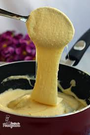

Favoritos
FavoritosAligot
Uma receita clássica francesa de Aligot, um purê de batata cremoso com queijo

Ingredientes:
- 1 kg de batatas
- 400 g de queijo Gruyère ralado
- 200 ml de creme de leite
- 2 dentes de alho (picados)
- Sal e pimenta a gosto
Instruções:
- Descasque as batatas e corte-as em pedaços uniformes. Cozinhe em água salgada até ficarem macias, cerca de 20 minutos.
- Enquanto as batatas cozinham, aqueça o creme de leite em uma panela pequena até começar a ferver. Adicione o alho picado e cozinhe por mais 2 minutos. Retire do fogo e reserve.
- Escorra as batatas e passe-as por um espremedor ou amasse-as até obter um purê liso.
- Adicione o creme de leite quente ao purê de batatas, mexendo bem para incorporar.
- Adicione o queijo Gruyère ralado aos poucos, mexendo constantemente até que o queijo esteja completamente derretido e o purê esteja elástico e cremoso.
- Tempere com sal e pimenta a gosto. Sirva imediatamente como acompanhamento para carnes ou pratos principais.